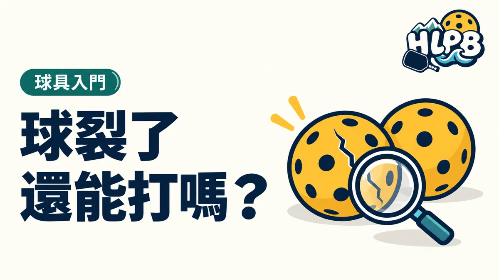

打到一半發現球裂了，依 USA Pickleball 2026 規則，先完成這次來回，再處理換球。沒有裁判時，須所有球員同意裂球影響了結果，才重打；不能看到裂痕就直接取消上一球。有裁判的比賽則交由裁判判定。
先分清楚三個不同問題
發現球裂了、需要換球，以及上一個來回是否重打，不是同一個判斷。球體異常值得檢查，但不能只因回合結束後看見裂痕，就自動把結果取消。應按適用規則處理發現時機與對結果的影響。
| 情況 | 處理重點 |
|---|---|
| 來回中懷疑球體異常 | 依規則完成來回，再於下一次發球前提出檢查 |
| 沒有裁判 | 重打須符合規則要求，不能由單一球員自行決定 |
| 有裁判 | 交由裁判按規則判定球況及是否影響結果 |
| 已決定換球 | 依大會或球局安排更換，另確認上一來回的結果 |
沒有裁判時，怎麼把問題說清楚？
可以先指出何時注意到異常，再一起查看球體，確認是否有裂損及是否影響該次結果。依 2026 USA Pickleball 10.G，無裁判時的重打需要所有球員同意裂球影響來回結果；若不符合該條件，不應只憑一方要求取消結果。這是規則程序，不是在判斷誰比較吃虧。
日常用球檢查與比賽判定，各自怎麼準備？
開打前先查看球體，可減少回合結束後才發現問題的情況。準備正式賽事時，另讀主辦採用的規則與用球安排。本文依 2026 USA Pickleball 10.G、20.F 整理；不同體系或後續版本應查相應條文。
參考：USA Pickleball 2026 官方規則，10.G、20.F。
最後查證：2026-10-19｜資料來源：USA Pickleball 2026 官方規則 10.G、20.F
返回文章列表